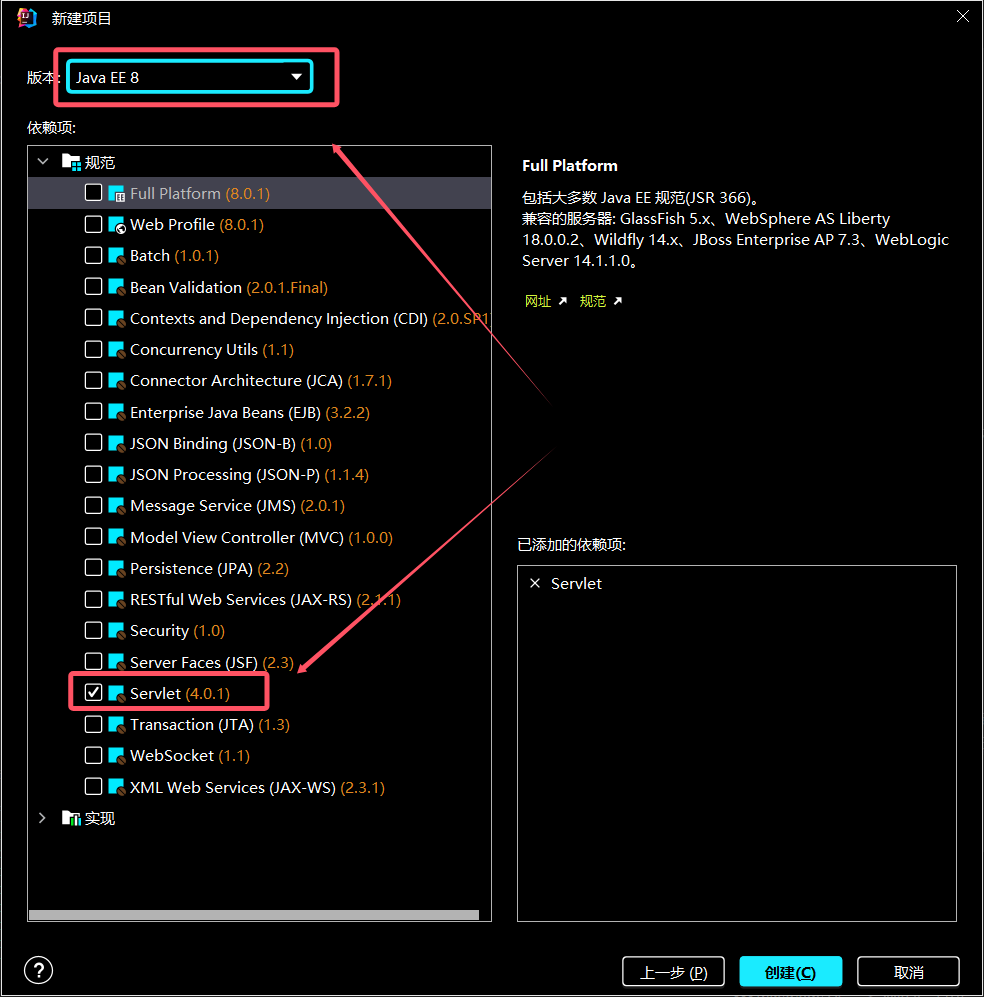
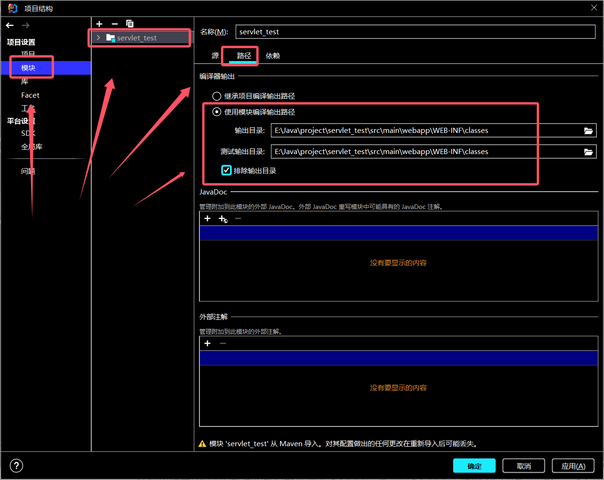
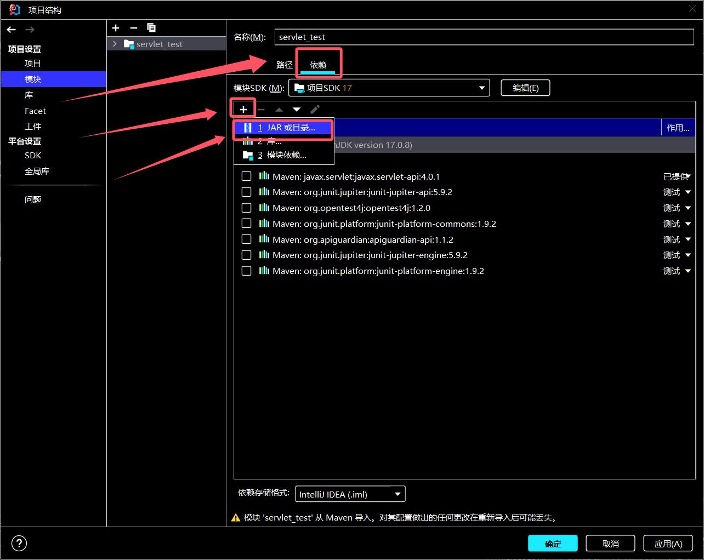
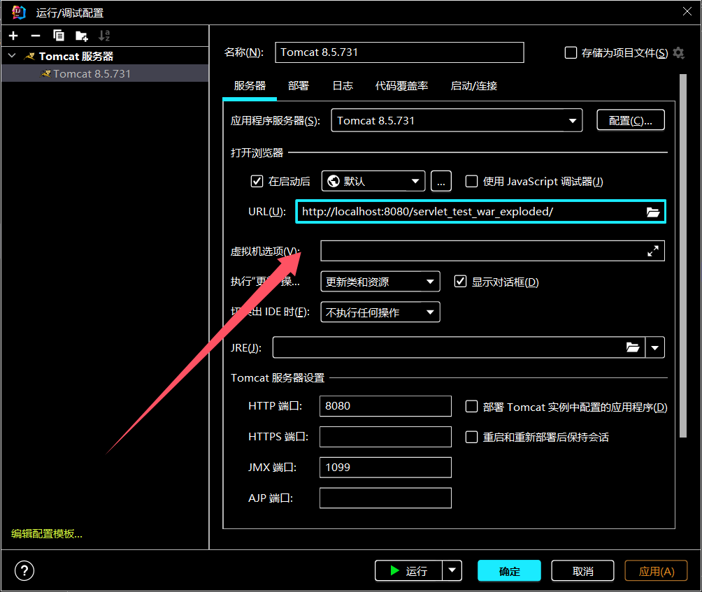
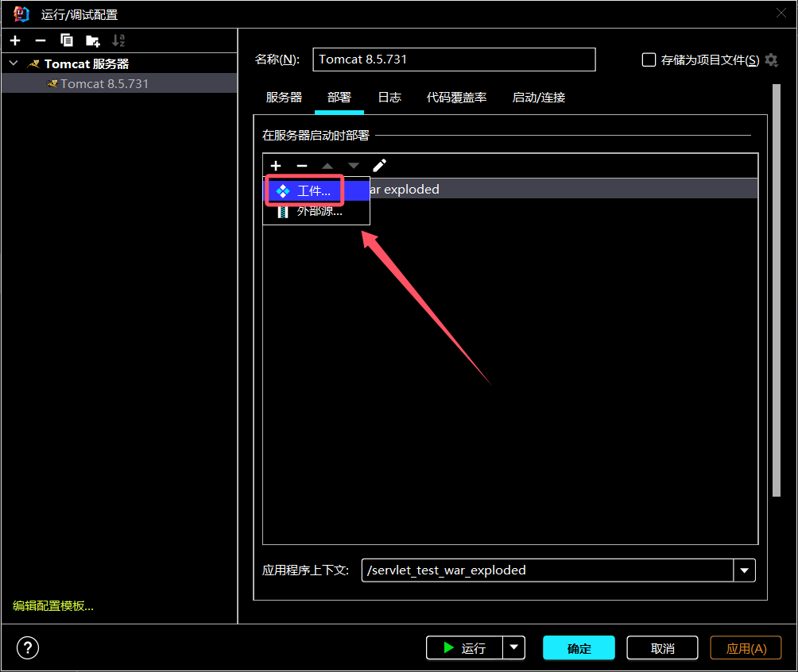
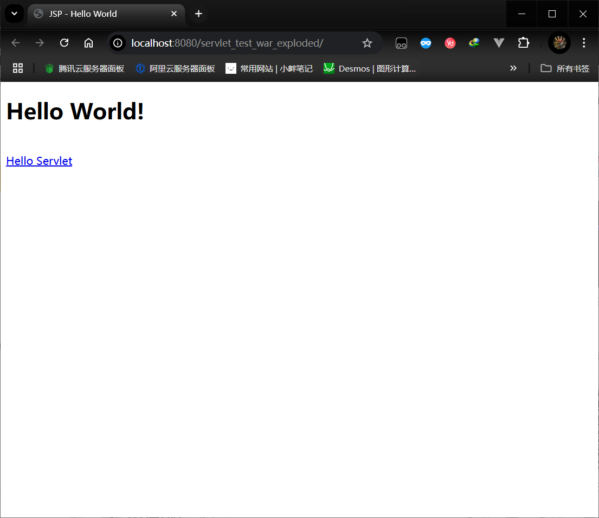

所使用的idea版本
创建一个新项目
创建一个java enterprise项目，然后下一步

选择依赖
选择要添加的依赖，然后finish完成

创建lib和classes
在webapp的WEB-INF目录下创建lib目录和classes目录
修改编译输出路径
在左上角File中打开Project Structure -> 点击左边栏中的Modules -> 在中间栏中选中项目 -> 在右边栏中切换到Path选项卡 -> 勾选Use module compile output path -> 将Output path和Test output path的路径修改为刚刚创建的classes的路径

修改存放jar包的路径
在右边栏中切换到Dependencies选项卡 -> 点击“+”号 -> 点击“JARs or Directories…” -> 选中刚刚创建的lib目录

然后会弹出这个，选择Jar Directory
Tomcat配置
点击Run -> Edit Configurations，在这里可以修改程序运行时使用浏览器打开的地址

Application context指定本工程的根目录
如果是新建的Tomcat，没有这一项的话，可以新建一个

运行
修改index.jsp中的内容，然后点击右上角运行一把

Servlet实现
创建MyServlet类，并继承HttpServlet，然后通过@WebServlet()注解的方式配置servlet
1
2
3
4
5
6
7
8
9
10
| package com.lxx6.software;
import javax.servlet.annotation.WebServlet;
import javax.servlet.http.HttpServlet;
@WebServlet(name = "myServlet", value = "/myServlet")
public class MyServlet extends HttpServlet {
}
|
也可以在web.xml中配置
1
2
3
4
5
6
7
8
9
10
11
12
13
14
15
16
| <?xml version="1.0" encoding="UTF-8"?>
<web-app xmlns="http://xmlns.jcp.org/xml/ns/javaee"
xmlns:xsi="http://www.w3.org/2001/XMLSchema-instance"
xsi:schemaLocation="http://xmlns.jcp.org/xml/ns/javaee http://xmlns.jcp.org/xml/ns/javaee/web-app_4_0.xsd"
version="4.0">
<servlet>
<servlet-name>myServlet</servlet-name>
<servlet-class>com.lxx6.software.MyServlet</servlet-class>
</servlet>
<servlet-mapping>
<servlet-name>myServlet</servlet-name>
<url-pattern>/myServlet</url-pattern>
</servlet-mapping>
</web-app>
|
然后实现doGet和doPost方法
1
2
3
4
5
6
7
8
9
10
11
12
13
14
15
16
17
18
19
20
21
22
23
24
25
26
27
28
29
30
31
32
33
34
35
36
37
38
39
40
41
42
43
44
45
46
47
48
49
50
51
| package com.lxx6.software;
import javax.servlet.ServletException;
import javax.servlet.ServletInputStream;
import javax.servlet.annotation.WebServlet;
import javax.servlet.http.HttpServlet;
import javax.servlet.http.HttpServletRequest;
import javax.servlet.http.HttpServletResponse;
import java.io.BufferedReader;
import java.io.IOException;
import java.io.InputStreamReader;
import java.io.PrintWriter;
@WebServlet(name = "myServlet", value = "/myServlet")
public class MyServlet extends HttpServlet {
protected void doGet(HttpServletRequest req, HttpServletResponse resp) throws ServletException, IOException {
resp.setContentType("text/html");
PrintWriter out = resp.getWriter();
out.println("<html><body>");
out.println("<h1>Hello World!</h1>");
out.println("</body></html>");
}
protected void doPost(HttpServletRequest req, HttpServletResponse resp) throws ServletException, IOException {
req.setCharacterEncoding("utf8");
resp.setCharacterEncoding("utf8");
ServletInputStream inputStream = req.getInputStream();
InputStreamReader inputStreamReader = new InputStreamReader(inputStream, "utf8");
BufferedReader bufferedReader = new BufferedReader(inputStreamReader);
StringBuilder stringBuilder = new StringBuilder();
String len;
while ((len = bufferedReader.readLine()) != null){
stringBuilder.append(new String(len.getBytes()));
}
String name = req.getHeader("name");
PrintWriter writer = resp.getWriter();
writer.println(name + "发送了: " + stringBuilder);
}
}
|
发送请求测试
运行，使用postman测试一下，get请求

post请求

打包
点击Build -> Build Artifacts -> 选中war -> 选则Build
war和war exploded的区别
1
2
3
4
5
6
7
8
| war模式：将WEB工程以包的形式上传到服务器 ；
war exploded模式：将WEB工程以当前文件夹的位置关系上传到服务器；
（1）war模式这种可以称之为是发布模式，看名字也知道，这是先打成war包，再发布；
（2）war exploded模式是直接把文件夹、jsp页面 、classes等等移到Tomcat 部署文件夹里面，进行加载部署。因此这种方式支持热部署，一般在开发的时候也是用这种方式。
（3）在平时开发的时候，使用热部署的话，应该对Tomcat进行相应的设置，这样的话修改的jsp界面什么的东西才可以及时的显示出来。
|
打包完成后，项目根路径的target文件夹下的war文件就是了，解压至部署好的环境下即可
参考：https://blog.csdn.net/xlgen157387/article/details/56498938